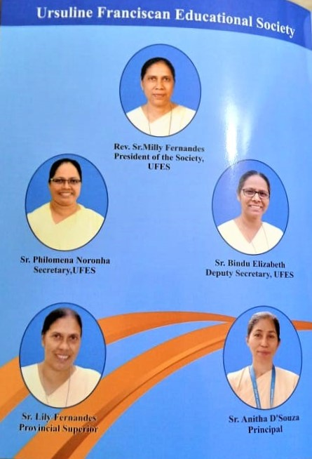
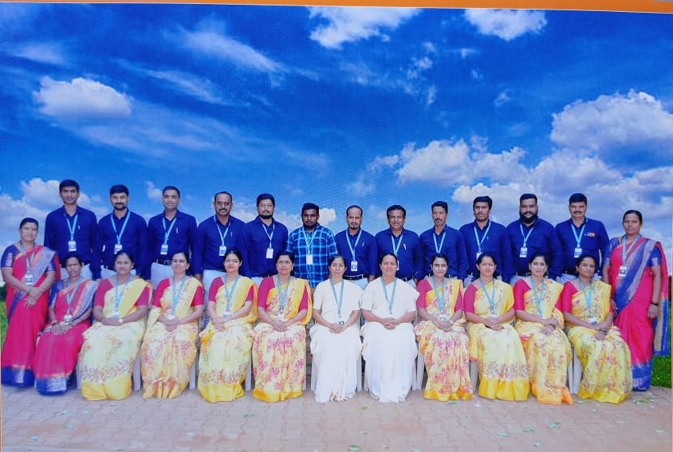

ST.JOSEPH'S PRE-UNIVERSITY COLLEGE
Hunsur - 571105
Mysuru District,Karnataka
☎: 08222-251572
Management : Ursuline Franciscan Educational Society
Reg. S.N. 1/64-65 dated 03-04-1964
Generalate, 'Somarpann',Derlakatte - 575 018
Dakshina Kannada, Karnataka
Phone : 0824-2202803, Fax : 0824-2203194
E-maill : somarpann@yahoo.co.in
Sr. Anitha D Souza (Principal)

OUR STAFF
